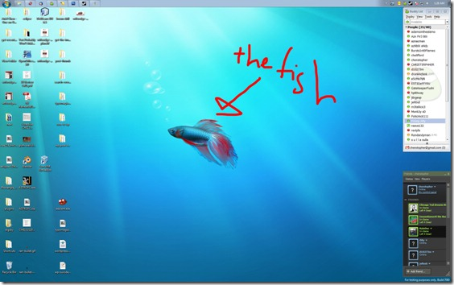

Got Detripled
25 March 2009
{kind=link}
Daomin is gone! Now I don’t have to climb up to the bunk bed anymore. Sweet.
Author: chenstopher
25 March 2009
Daomin is gone! Now I don’t have to climb up to the bunk bed anymore. Sweet.
09 March 2009
HOLY SHIT. 24 SSD DRIVES IN RAID. 2GB/S.
I give up.
06 March 2009
Yeah. I think I’m just gonna do C# and XNA game programming. Seems a whole lot easier and I won’t have to manage memory.
Sure, C#/XNA is slower but I don’t think it matters when the games I want to make are gonna be 2D. When I move on to 3D I think I’ll try C++/DirectX again. I can’t really find any decent online resources for DirectX right now and I don’t feel like buying a book.
I’ll probably take the game programming course here at Stony in a later semester. The teacher is cool and having someone guide you through it is a whole lot easier. Wish they had it when I was at Tech. Screw you weird name people, Ariel and Aljohn. Oh and Lukasz.
This kid Allen(?) is starting up a game programming club so I’m gonna be joining that. He seems pretty awesome at programming, much more knowledgeable than I who only knows Java and a bit of C++ (and php/html/css/js). It’ll be fun. I hope.
So anyway, I’ve starting learning C# and it’s a lot like Java. That’s kind of a good thing since Java’s pretty easy. Still deciding on game to start off with.
Snake? Space Invaders? Tetris? PONG?!
For the sake of randomness. Here’s a video of one of the best games ever.
03 March 2009
Weird song. Music video is incredible though.
01 March 2009
So I was sitting around yesterday bored out of my mind. Seriously. I started staring at the fish on my desktop.

I was trying to look for something to do. Searched DC++ for some games to play, didn’t really work. Tried to watch a movie, wasn’t in the mood. Do homework? It was a Saturday. No one does homework on Saturday.
Then I thought, I kinda want to learn Blender and 3D modeling and texturing. You know, do some animation and game programming. If I wanted to do animation, I’d have to learn some video editing. And for game programming, I’d have to learn DirectX programming and more C++. So, I ended up making a list of stuff I wanted to learn.
Yeah that’s a lot of stuff but it’ll give me something to do if I ever fall into “help I’m bored out of my mind” state again. If it ever does happen I can just refer to the list and google up some tutorials.
I tried to start learning Blender but Windows 7 had some problems with it and I didn’t feel like booting up the Vista partition. So I just spent the rest of the day doing nothing.
Yeah I know. I’m lazy. I should probably actually try to accomplish stuff on the list instead of just making one for fun but you know what? Screw you. Just keeeeding. Haha.
I think I’ll start with DirectX/Game/C++.
20 February 2009
This minor key version of Still Alive is freaking awesome.
But there is none better than Hannan’s version.
14 February 2009
I’ve got the song Spiralling by Keane stuck in my head. I don’t know why. It’s not even that great of a song but it is pretty catchy. Doesn’t really sound like Keane’s usual stuff but whatever.
OOOOO
We’re tumbling down
We’re spiralling
OOOOO
Tied up to the ground
We’re spiralling
Don’t have any idea about what the song is about. Probably something along the lines of a relationship falling apart or something like that.
Love the “OOOOO” part.
23 January 2009
I couldn’t sleep so I spent the whole night looking through reddit.com.
Some interesting stuff going on.
Okay maybe not.
School is starting up soon. That sucks.
I really don’t want to go back to school.
I think medicine, doctors, technology and all that stuff are limiting the rate that humans are evolving. That is if evolution works.
Why is my iPhone so slow?
If I go to sleep, I don’t want to wake up. If I stay awake, I don’t want to sleep.
Sunflower seeds are pretty good.
The street lights on my block turn off at about 6:52 am. This picture was taken at 6:39.

That’s not the sun.
There was this dude on the train the other day. He was arguing with the other dudes about how his girlfriend wasn’t let on some bus. I think he was drunk. It was interesting.
I stay up really late sometimes. I like it cause everyone else is sleeping.
Do not litter.
I usually sleep around 6. But its been taking me a lot longer to fall asleep lately. I don’t know why.
These sunflower seeds taste funny.
Actually I do know why. But I’m not telling you.
I like it when I stay up really late and I get really tired. So tired that my eyes wont stay open. I like going to sleep during that time.
Hey look, Chloe is sleeping.

She’s gotten bigger.
I miss my watch.
Oh and about the Windows 7 on my laptop post that I said I was gonna do. I’m not gonna do it cause I don’t care and you don’t care. Maybe you do care but I don’t care that you care. So stop caring.
jQuery’s slideDown function is pissing me off. WORK.
“Then why do we die?” –awesome kid
I think I’ll go to sleep now. Maybe.
time--;
22 January 2009
I was looking up BF2 mods on youtube and I came across this video. I don’t know why but I find it incredibly funny. That kid is awesome.
16 January 2009
Guys! Check out http://wtfoodge.com! It’s the latest project that I’ve been working on with Joel and Tamer. I guess its up now and Joel has started posting. I don’t think I’ll be posting that often.
I spent a couple days working on it. I wanted to learn some more stuff about webdesign like php and css. And I did. Also learned how to write wordpress plugins. Good stuff.
Overall, I think the site looks pretty good. Although there is one thing I feel that is kinda off and that is the right column. I don’t know if its the colors or the picture. It just looks WEIRD. Maybe its cause that shade of grey is too dull. I don’t know.
So guys, give me some critiques on the design of the site. Doesn’t matter if its something bad, I just want to know what I can do to make it better. Web design is fun.
And go check it out right now. http://wtfoodge.com
One last thing. Internet Explorer freaking sucks. SUCKS.
\<!--[if IE]> You suck \<![endif]-->